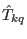

using ic1ion as a module in mcphas,mcdiff,mcdisp,...
Currently ic1ion is loadable by mcphas as an external module. The single
ion parameter file is just the same as given in the above format for running ic1ion as
a stand alone program. However, some input files have to follow special conventions in order that
mcphas, mcdisp, mcdiff work correctly:
- the standard operator sequence for ic1ion is different from all other modules, it is
puts Ia=Sx Ib=Sy Ic=Sz Id=Lx Ie=Ly If=Lz
- for higher order operators, we made Ig==T22S, Ih==T21S, Ii==T20, Ij==T21, Ik==T22,
Il==T33S, etc... the operators  are described in equation (124)
- the magnetic moments are calculated in mcalc according
to

- Also the inelastic neutron scattering cross section
in mcdisp is evaluated using the first
in dipole approximation and beyond for the magnetic formfactor.